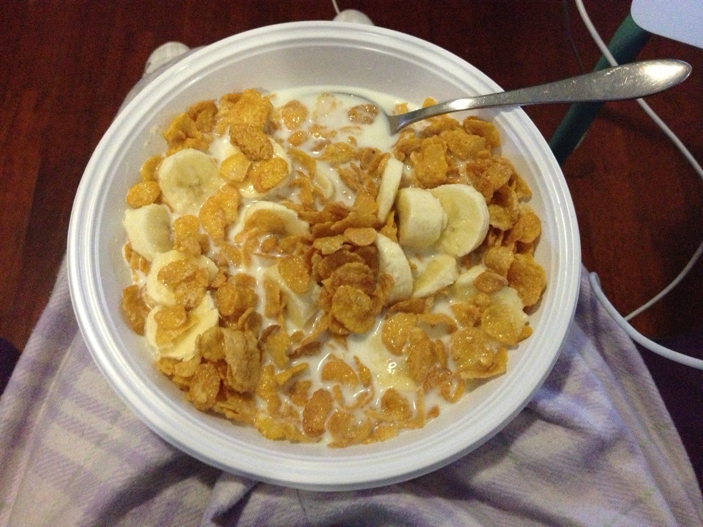
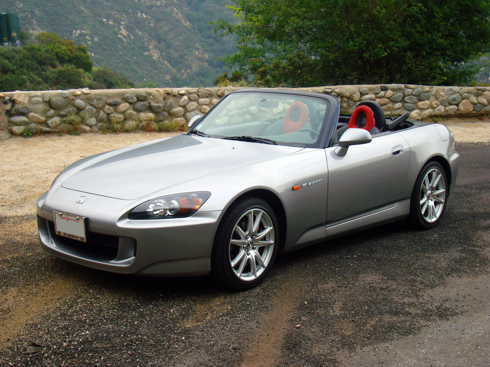

My name is Miguel Duran, and I am a sophomore at the University of Washington. I like eating cereal, but not just any cereal! I like Frosted Flakes with banana slices. It's one of my favorite snacks, and is surpsisingly healthy. There are over 15 vitamins and minerals in this cereal, with the banana and milk adding some extras as well. To fininsh off this paragraph, I will say one last thing-if you are ever craving a late night snack that requires very little. Here is a photo of this snack.
One of my all time favorite cars is the Honda s2000. It's a 2-door sports car with a RWD front engine layout that makes about 237 horsepower and 153 ft/lb of torque. I have been saving up all year to get one for the summer, and to finally have a car. Ever since I was 16, this car has been on the back of my mind and the time is finally going to come where I pick one up. If all goes well, I should be driving it the first week of July. Here is a weird small square image of the car.
